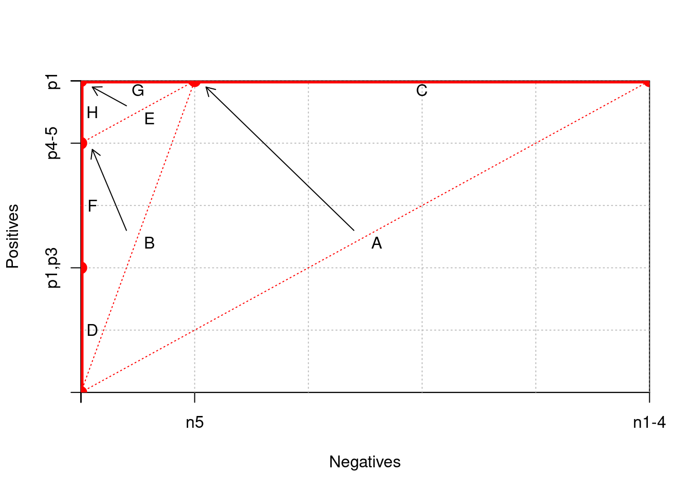

Code
x <- c(0,0,0,0,100,500)
y <- c(0,200,400,500,500,500)
h <- 500
w <- 500
grid.step <- 100
plot( c(0,w), c(0,h),
xaxs = "i",yaxs = "i",
xaxt = 'n', yaxt = 'n',
type = "n",
xlab = "Negatives", ylab = "Positives")
axis(2,y,labels=c('','p1,p3','p4-5','p1','',''))
axis(1,x,labels=c('','','','','n5','n1-4'))
gx <- grid.step
while (gx <= w) {
abline(v = gx, col="gray", lty="dotted")
gx <- gx + grid.step
}
gy <- grid.step
while (gy <= h) {
abline(h = gy, col="gray", lty="dotted")
gy <- gy + grid.step
}
text( (x[1]+x[6])/2+10, (y[1]+y[6])/2-10, "A")
text( (x[1]+x[5])/2+10, (y[1]+y[5])/2-10, "B")
text( (x[5]+x[6])/2, y[6]-15, "C")
text( x[2]+10, (y[1]+y[2])/2, "D")
text( (x[3]+x[5])/2+10, (y[3]+y[5])/2-10, "E")
text( x[3]+10, (y[2]+y[3])/2, "F")
text( (x[4]+x[5])/2, y[5]-15, "G")
text( x[4]+10, (y[3]+y[4])/2, "H")
arrows( (x[1]+x[6])/2-10, (y[1]+y[6])/2+10, x[5]+10, y[5]-10, code=2, length=0.1, label="`Gills'" )Warning in arrows((x[1] + x[6])/2 - 10, (y[1] + y[6])/2 + 10, x[5] + 10, :
"label" is not a graphical parameterCode
arrows( (x[1]+x[5])/2-10, (y[1]+y[5])/2+10, x[3]+10, y[3]-10, code=2, length=0.1 )
arrows( (x[3]+x[5])/2-10, (y[3]+y[5])/2+10, x[4]+10, y[4]-10, code=2, length=0.1 )
lines( x, y, lwd=5, type='o',col='red')
segments(x[1],y[1],x[6],y[6],lty=3,col="red")
segments(x[1],y[1],x[5],y[5],lty=3,col="red")
segments(x[3],y[3],x[5],y[5],lty=3,col="red")